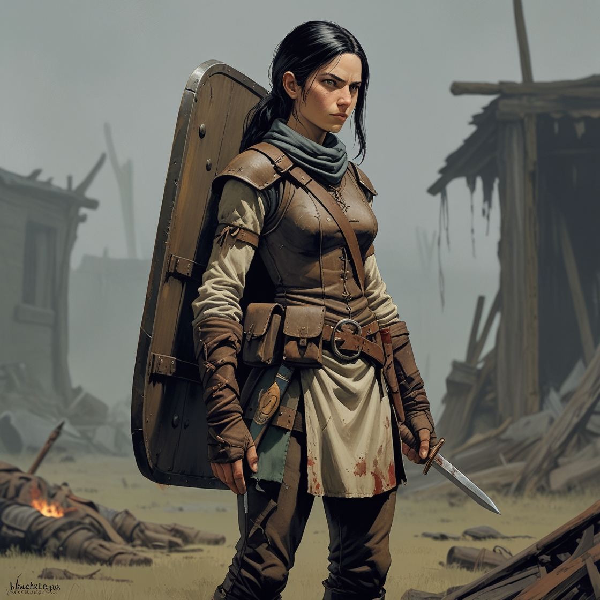

<!DOCTYPE html>
<html lang="ru">
    <head>
        <meta charset="UTF-8"></meta>
        <meta name="viewport" content="width=device-width, initial-scale=1.0"></meta>
        <title>Карточка персонажа</title>
        <style>
            body {
                margin: 0;
                font-family: Arial, sans-serif;
            }

            .container {
                display: flex;
                flex-direction: column;
                align-items: center;
            }

            .portrait {
                object-fit: cover;
                padding: 16px;
                border-radius: 32px;
            }

            .content {
                margin-top: 16px;
                margin-bottom: 16px;
                background: white;
                border-radius: 16px;
                box-shadow: 0 2px 6px rgba(0, 0, 0, 0.1);
                box-sizing: border-box;
            }

            @media (orientation: portrait) {
                .container {
                    flex-direction: column;
                }

                .portrait {
                    width: 98vw;
                    height: 98vw;
                }

                .content {
                    width: 98vw;
                    padding: 16px;
                }
            }

            @media (orientation: landscape) {
                .container {
                    flex-direction: row;
                    align-items: flex-start;
                }

                .portrait {
                    width: 30vw;
                    height: 30vw;
                }

                .content {
                    width: 67%;
                    padding: 16px;
                    box-sizing: border-box;
                }
            }
        </style>
    </head>
    <body>
        <div class="container">
            </img>
            <div class="content">

                <h1>Карточка персонажа — Майя</h1>
                <div class="section">
                    <h2>Основная информация</h2>
                    <div class="section">
                        <p><strong>Класс:</strong><strong><a href="https://lakisfilippidis.github.io/dnd.images/Classes/fighter.html"> Боец (Fighter)</a></strong>
                        <p><strong>Предыстория:</strong> Полевой медик</p>
                        <p><strong>Мировоззрение:</strong> Законопослушный нейтральный</p>
                        <p><strong>Раса:</strong> Человек</p>
                        <p><strong>Уровень:</strong> 1</p>
                        <p><strong>Опыт:</strong> 150</p>
                    </div>

                    <div class="section">
                        <div class="section-title"><h2>Характеристики</h2></div>
                        <div class="stats-grid">
                            <div class="stat"><p><strong>Сила:</strong> 13 (+1)</div>
                            <div class="stat"><p><strong>Ловкость:</strong> 11 (+1)</div>
                            <div class="stat"><p><strong>Телосложение:</strong> 14 (+2)</div>
                            <div class="stat"><p><strong>Интеллект:</strong> 12 (+1)</div>
                            <div class="stat"><p><strong>Мудрость:</strong> 15 (+3)</div>
                            <div class="stat"><p><strong>Харизма:</strong> 10 (+0)</div>
                            <br>
                            <div class="stat"><p><strong>Класс доспеха (КБ):</strong> 16 (Кожаный нагрудник + Ловкость + Щит)</p></div>
                            <div class="stat"><p><strong>КЗ (HP):</strong> 12 (1-lvl-10, телосложение +2)</p></div>
                            <div class="stat"><p><strong>Инициатива:</strong> +0</p></div>
                            <div class="stat"><p><strong>Скорость:</strong> 30 фт</p></div>
                            <div class="stat"><p><strong>Спасброски:</strong> Сила, Телосложение</p></div>
                        </div>
                        <br>

                        <div class="section">
                            <div class="section-title"><h3>Оружие</h3></div>
                            <ul>
                                <li><p><strong>Рондельский кинжал:</strong> 1d4 колющий урон, легкое, +3 (ловкость + владение)</p></li>
                            </ul>
                        </div>

                        <div class="section">
                            <div class="section-title"><h3>Доп. снаряжение</h3></div>
                            <ul>
                                <li><p><strong>Набор путешественника</strong> (еда, вода, палатка, верёвка)</p></li>
                                <li><p><strong>Широкий боевой щит</strong> может использоваться как укрытие для раненого или носилки</p></li>
                                <li><p><strong>Набор медика</strong> вне боя: раз в день можно вылечить союзника за короткий отдых</p></li>
                                <li><p><strong>Набор первой помощи:</strong> остановка кровотечения, снятие отравления, восстановление 1d4+2 HP</p></li>
                            </ul>
                        </div>

                        <div class="section">
                            <div class="section-title"><h3>Доспехи</h3></div>
                            <ul>
                                <li><p><strong>Кожаная броня:</strong> +1 к КБ, легкая защита</p></li>
                            </ul>
                        </div>

                        <div class="section">
                            <div class="section-title"><h3>Навыки</h3></div>
                            <ul>
                                <li><p><strong>Медицина:</strong> +6</p></li>
                                <li><p><strong>Проницательность:</strong> +4</p></li>
                                <li><p><strong>Выживание:</strong> +3</p></li>
                                <li><p><strong>Атлетика:</strong> +3</p></li>
                            </ul>
                        </div>

                        <div class="section">
                            <div class="section-title"><h3>Черты характера</h3></div>
                            <p><strong>Положительные:</strong> Стойкая даже под давлением, Быстро читает людей, замечает ложь и страх,Верна союзникам, не бросит раненого в бою</p>
                            <p><strong>Отрицательные:</strong> Замкнутая, редко делится личным, склонна к чрезме рной самостоятельности, молчалива</p>
                        </div>

                        <div class="section">
                            <h2>Особенности</h2>
                            <ul>
                                <li><p><strong><a href="https://lakisfilippidis.github.io/dnd.images/Classes/fighter.html#fighting-styles">Железная воля (Iron Will)</a></strong></p></li>
                                <li><p><strong><a href="https://lakisfilippidis.github.io/dnd.images/Classes/fighter.html#second-wind">Второе дыхание</a></strong></p></li>
                            </ul>
                        </div>
                    </div>
                </div>
            </div>
        </div>
    </body>
</html>
